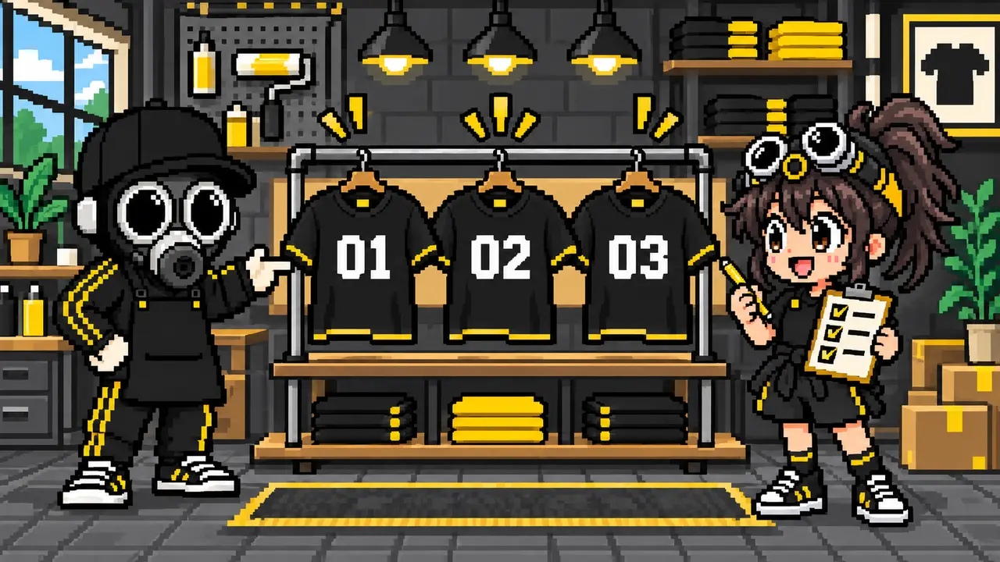
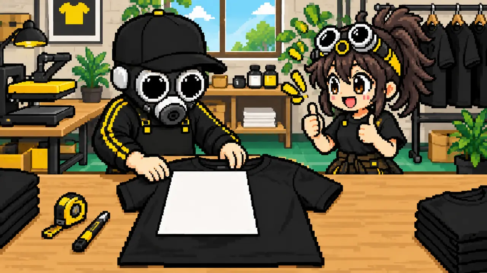
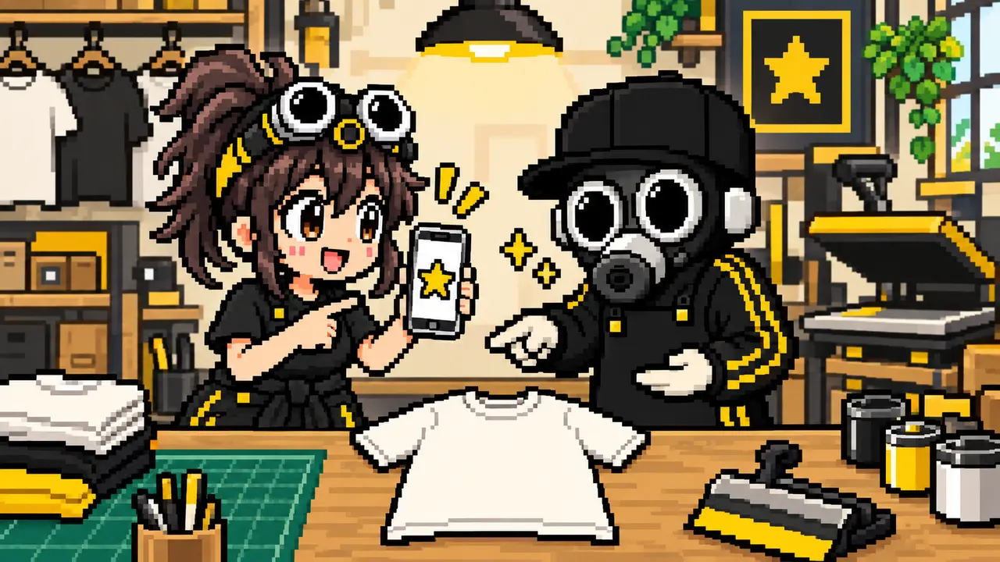

お揃いTシャツは1枚から、少ない枚数でも作れます
大人数のチームでなくても、オリジナルTシャツは作れます。誕生日や記念日、仲間内のイベント、送別のプレゼントなど、少ない枚数だからこそ一人ひとりに合わせたデザインを楽しめます。
数枚だけ作る場合は、製版を使わないDTFプリントなどが選びやすく、写真・イラスト・多色のデザインにも対応しやすい方法です。

デザインや枚数が決まっていなくても大丈夫。まずは「誰と、どんな日に使いたいか」から一緒に整理できます。
ちょっとしたイベントやプレゼントにおすすめ
本人が好きな言葉やモチーフを入れて、身につけられるプレゼントに。
ライブ、スポーツ観戦、趣味の集まりなど、同じデザインで一体感を楽しめます。
名前やメッセージを入れ、写真とは違う形で思い出を残せます。
スタッフや仲間だけの少数制作なら、必要な分だけ試せます。
名前や番号を1枚ずつ変えることもできます

全員で共通のロゴを使いながら、背中の番号や名前だけを変える方法もあります。誰のTシャツか分かりやすくなり、プレゼントらしい特別感も出せます。
文字の綴りや番号は、プリント後に簡単には直せません。制作前に一覧表へまとめ、注文する人と制作側の両方で確認するのが安全です。
少ない枚数にはどのプリント方法が向いている？
少数・フルカラー・写真や細かなイラストに向いています。名前や番号を変える制作とも相性がよい方法です。
同じデザインをある程度まとめて作るときに向いています。色数ごとに製版が必要です。
方法名を先に決める必要はありません。枚数、色数、プリント位置、用途を伝えると、条件に合う方法を比較できます。
プリントの大きさはA4用紙で確認できます

スマホの完成イメージだけでは、実際の大きさを判断しにくいことがあります。A4用紙は21×29.7cm。手持ちのTシャツへ置いて正面から見ると、胸や背中にプリントしたときの感覚をつかみやすくなります。
同じプリント幅でも、Tシャツのサイズによって見え方は変わります。複数サイズを作るときは、基準となるサイズを決めて確認しましょう。
料金は枚数だけでなく、プリント内容で変わります
小ロットTシャツの料金は、Tシャツ本体、プリントの大きさ、加工する箇所、色数、1枚ずつ変える名前や番号などで変わります。
- Tシャツの種類・色・サイズ
- 必要な枚数
- 胸・背中・袖などのプリント位置
- 希望するプリント幅
- 共通デザインか、1枚ずつ内容を変えるか
この5つが分かると、比較しやすい見積もりになります。まだ決まっていない項目は「未定」と伝えて問題ありません。
使う日から逆算して、早めに相談する
データ確認、Tシャツの取り寄せ、プリント、検品、発送には時間が必要です。イベント当日やプレゼントを渡す日が決まっている場合は、その日を最初に伝えましょう。
サイズや枚数の変更、在庫切れ、配送状況も考え、余裕を持って相談すると選べるTシャツや方法が増えます。
デザインデータがなくても相談できます

手描きの絵、スマホの画像、写真、イメージに近い参考画像など、今あるものから相談を始められます。ただし、画像として見られることと、そのまま大きくプリントできることは別です。
画質・背景透過・文字の細さなどを確認し、必要に応じてプリントしやすい形へ整理します。パソコンや専門アプリが苦手でも、希望を言葉で伝えてください。
相談前に分かる範囲で用意する6項目

全部決めてから注文するのではなく、分かるところまで伝えて相談すればいいんだね！
MISSION COMPLETE!
少ない枚数だからこそ、気軽に楽しく
ちょっとしたイベントや大切な人へのプレゼントを、お揃いのプリントウェアで形にしませんか。画像1枚と簡単な希望から相談できます。
無料見積もりへ ▶裏公式LINEで相談する▶実際のウェアプリント相談・制作経験をもとに内容を確認しています。最終更新：2026年9月8日 運営者・編集方針